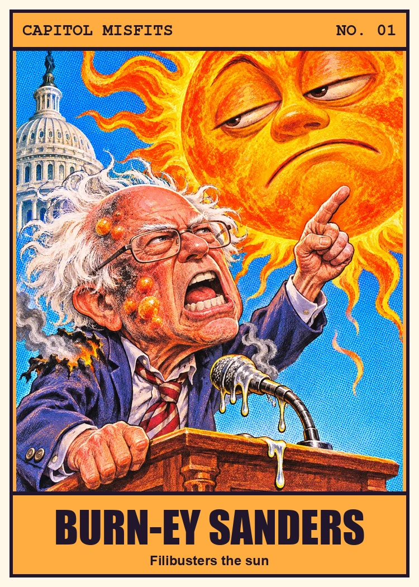

Capitol Misfits No. 01
Burn-ey Sanders
The sun asked him to yield. He demanded a recorded vote.
Made-up stats
- SPF applied
- 0
- Microphones melted
- 3
- Times he yielded
- 0
Real facts about Bernie Sanders
- Vermont first elected Sanders to the U.S. Senate in 2006.
- He served as mayor of Burlington before going to Congress.